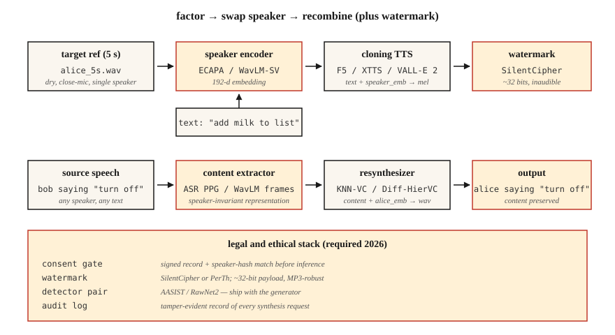

Voice Cloning & Voice Conversion
Voice cloning reads your text in someone else's voice. Voice conversion rewrites your voice into someone else's while preserving what you said. Both hang on the same decomposition: separate speaker identity from content.
- Type
- Build
- Languages
- Python
- Prerequisites
- Phase 6 · 06 (Speaker Recognition), Phase 6 · 07 (TTS)
- Time
- ~75 minutes
#The Problem
In 2026, a 5-second audio clip is enough to produce a high-quality clone of anyone's voice with a consumer GPU. ElevenLabs, F5-TTS, OpenVoice v2, VoiceBox all ship zero-shot or few-shot cloning. The technology is a blessing (accessibility TTS, dubbing, assistive voices) and a weapon (scam calls, political deepfakes, IP theft).
Two closely-related tasks:
- Voice cloning (TTS-side): text + 5-second reference voice → audio in that voice.
- Voice conversion (speech-side): source audio (person A saying X) + reference voice of person B → audio of B saying X.
Both factor a waveform into (content, speaker, prosody) and recombine content from one source with speaker from another.
Key constraint you now ship under in 2026: watermarking and consent gates are legally required in the EU (AI Act, enforceable August 2026) and in California (AB 2905, effective 2025). Your pipeline must emit an inaudible watermark and refuse non-consensual clones.
#The Concept

Zero-shot cloning. Pass a 5-second clip to a model that has been trained on thousands of speakers. The speaker encoder maps the clip to a speaker embedding; the TTS decoder conditions on that embedding plus text.
Used by: F5-TTS (2024), YourTTS (2022), XTTS v2 (2024), OpenVoice v2 (2024).
Few-shot fine-tuning. Record 5-30 minutes of the target voice. LoRA-fine-tune a base model for an hour. Quality leaps from "okay" to "indistinguishable". Coqui and ElevenLabs both support this pattern; community uses it with F5-TTS.
Voice conversion (VC). Two families:
- Recognition-synthesis. Run ASR-like model to extract content representation (e.g., soft phoneme posteriors, PPGs), then resynthesize with target speaker embedding. Robust to language and accent. Used by KNN-VC (2023), Diff-HierVC (2023).
- Disentanglement. Train an autoencoder that separates content, speaker, and prosody in latent space at the bottleneck. Swap speaker embedding at inference. Lower quality but faster. Used by AutoVC (2019), VITS-VC variants.
Neural codec-based cloning (2024+). VALL-E, VALL-E 2, NaturalSpeech 3, VoiceBox — treat audio as discrete tokens from SoundStream / EnCodec, train a large autoregressive or flow-matching model over codec tokens. Quality comparable to ElevenLabs on short prompts.
#The ethics bit, not a bolt-on
Watermarking. PerTh (Perth) and SilentCipher (2024) embed a ~16-32 bit ID imperceptibly in the audio. Survives re-encoding, streaming, and common edits. Production-ready open source.
Consent gates. Must pair every cloned output with a verifiable consent record. "I, Rohit, on 2026-04-22, authorize this voice for X purpose." Store in a tamper-evident log.
Detection. AASIST, RawNet2, and Wav2Vec2-AASIST ship as detectors. ASVspoof 2025 challenge published EERs of 0.8–2.3% for state-of-the-art detectors against ElevenLabs, VALL-E 2, and Bark outputs.
#Numbers (2026)
| Model | Zero-shot? | SECS (target sim) | WER (intel.) | Params |
|---|---|---|---|---|
| F5-TTS | Yes | 0.72 | 2.1% | 335M |
| XTTS v2 | Yes | 0.65 | 3.5% | 470M |
| OpenVoice v2 | Yes | 0.70 | 2.8% | 220M |
| VALL-E 2 | Yes | 0.77 | 2.4% | 370M |
| VoiceBox | Yes | 0.78 | 2.1% | 330M |
SECS > 0.70 is generally indistinguishable from the target for most listeners.
#Build It
#Step 1: decompose with recognition-synthesis (code-only demo in main.py)
def clone_pipeline(ref_audio, text, target_embedder, tts_model):
speaker_emb = target_embedder.encode(ref_audio)
mel = tts_model(text, speaker=speaker_emb)
return vocoder(mel)Conceptually simple; implementation mass is in tts_model and speaker encoder.
#Step 2: zero-shot clone with F5-TTS
from f5_tts.api import F5TTS
tts = F5TTS()
wav = tts.infer(
ref_file="rohit_5s.wav",
ref_text="The quick brown fox jumps over the lazy dog.",
gen_text="Please add milk and bread to my list.",
)Reference transcript must exactly match the audio; mismatch breaks alignment.
#Step 3: voice conversion with KNN-VC
import torch
from knnvc import KNNVC # 2023 model, https://github.com/bshall/knn-vc
vc = KNNVC.load("wavlm-base-plus")
out_wav = vc.convert(source="my_voice.wav", target_pool=["alice_1.wav", "alice_2.wav"])KNN-VC runs WavLM to extract per-frame embeddings for source and target pool, then replaces each source frame with its nearest neighbor in the pool. Non-parametric, works with a minute of target speech.
#Step 4: embed a watermark
from silentcipher import SilentCipher
sc = SilentCipher(model="2024-06-01")
payload = b"consent_id:abc123;ts:1745353200"
watermarked = sc.embed(wav, sr=24000, message=payload)
detected = sc.detect(watermarked, sr=24000) # returns payload bytes~32 bits of payload, detectable after MP3 re-encode and light noise.
#Step 5: consent gate
def cloned_inference(text, ref_audio, consent_record):
assert verify_signature(consent_record), "Signed consent required"
assert consent_record["speaker_id"] == hash_speaker(ref_audio)
wav = tts.infer(ref_file=ref_audio, gen_text=text)
wav = watermark(wav, payload=consent_record["id"])
return wav#Use It
The 2026 stack:
| Situation | Pick |
|---|---|
| 5-sec zero-shot clone, open-source | F5-TTS or OpenVoice v2 |
| Commercial production cloning | ElevenLabs Instant Voice Clone v2.5 |
| Voice conversion (rewriting) | KNN-VC or Diff-HierVC |
| Many-speaker fine-tune | StyleTTS 2 + speaker adapter |
| Cross-lingual cloning | XTTS v2 or VALL-E X |
| Deepfake detection | Wav2Vec2-AASIST |
#Pitfalls
- Misaligned reference transcript. F5-TTS and similar require the reference text to match the reference audio exactly, punctuation included.
- Reverberant reference. Echo kills the clone. Record dry, close-mic.
- Emotional mismatch. Training reference "cheerful" produces cheerful clones of everything. Match reference emotion to target use.
- Language leakage. Cloning an English speaker then asking the model to speak French often carries the accent anyway; use cross-lingual models (XTTS, VALL-E X).
- No watermark. Legally unshippable in EU from Aug 2026.
#Ship It
Save as outputs/skill-voice-cloner.md. Design a cloning or conversion pipeline with consent gate + watermark + quality target.
#Exercises
- Easy. Run
code/main.py. Demonstrates the speaker-embedding swap by computing the cosine between two "speakers" pre and post swap. - Medium. Use OpenVoice v2 to clone your own voice. Measure SECS between reference and clone. Measure CER via Whisper.
- Hard. Apply SilentCipher watermark to 20 clones, run them through 128 kbps MP3 encode+decode, detect the payload. Report bit-accuracy.
#Key Terms
| Term | What people say | What it actually means |
|---|---|---|
| Zero-shot clone | 5 seconds is enough | Pretrained model + speaker embedding; no training. |
| PPG | Phonetic posteriorgram | Per-frame ASR posteriors used as language-agnostic content rep. |
| KNN-VC | Nearest-neighbor conversion | Replace each source frame with nearest target-pool frame. |
| Neural codec TTS | VALL-E style | AR model over EnCodec/SoundStream tokens. |
| Watermark | Inaudible signature | Bits embedded in audio, survive re-encode. |
| SECS | Cloning fidelity | Cosine between target and clone speaker embeddings. |
| AASIST | Deepfake detector | Anti-spoof model; detects synthesized speech. |
#Further Reading
- Chen et al. (2024). F5-TTS — open-source SOTA zero-shot cloning.
- Baevski et al. / Microsoft (2023). VALL-E and VALL-E 2 (2024) — neural-codec TTS.
- Qian et al. (2019). AutoVC — disentanglement-based voice conversion.
- Baas, Waubert de Puiseau, Kamper (2023). KNN-VC — retrieval-based VC.
- SilentCipher (2024) — Audio Watermarking — production-ready 32-bit audio watermark.
- ASVspoof 2025 results — detector vs synthesizer arms race, updated 2026.
Nice. That's 4 minutes of Speech & Audio behind you.
Continue to Music Generation — MusicGen, Stable Audio, Suno, and the Licensing Earthquake →